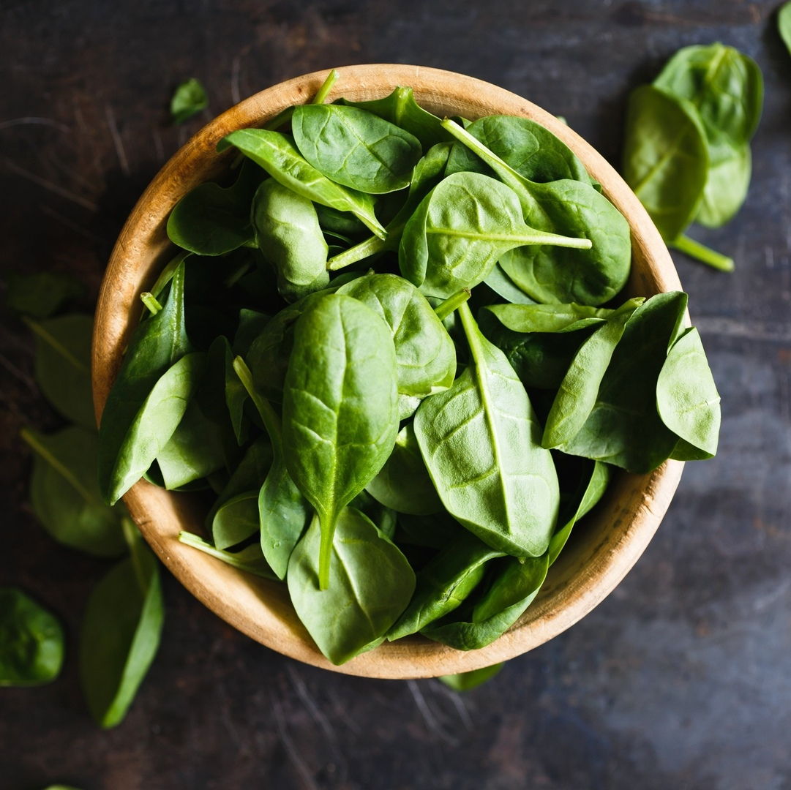

Король зеленых: 8 причин полюбить шпинат

В тёплое время года особенно хочется чего-то легкого, свежего и сочного. Под это описание идеально подходит наш герой – шпинат, который пользуется всё большей любовью у приверженцев здорового питания. И вполне заслуженно, ведь он обладает множеством полезных и даже уникальных свойств. Марина Басова выяснила, почему стоит включить шпинат в свой рацион.
1
Улучшает состояние кожи
Шпинат – это целая косметичка в одном растении, а всё благодаря содержащимся в нём витаминам А, К и фолиевой кислоты. Фолиевая кислота стабилизирует работу сальных желёз, оказывает противовоспалительный и антибактериальный эффекты, регулирует метаболизм кожи, улучшает кровообращение, ускоряет деление клеток и регенерацию тканей, нейтрализует свободные радикалы. Витамин А также обладает сильнейшим противовоспалительным эффектом, а ещё увлажняющими и омолаживающими свойствами. Витамин К укрепляет стенки сосудов. В результате регулярного употребления шпината улучшается цвет лица, уходят воспалительные элементы и тёмные круги под глазами, кожа начинает сиять. Кроме непосредственного употребления в пищу, шпинат также применяют в косметологии в составе различных лосьонов и масок для лица.
2
Очищает организм
Благодаря высокому содержанию пищевых волокон и пектина шпинат благотворно воздействует на пищеварительную систему: его регулярное употребление сокращает образование опухоли толстой кишки в два раза. Шпинат улучшает перистальтику кишечника, способствует его очищению и выведению вредных веществ из организма, оказывая мягкий слабительный эффект. И тем самым отлично подходит для различных детокс-программ. Калорий мало – пользы на миллион.
3
Защищает глаза
Употребление шпината является хорошей профилактикой катаракты. Его зелёные листья являются источником таких важных каротиноидов (провитаминов А), как лютеин и зеаксантин, которые помогают дольше сохранять нормальное зрение, замедляя возрастные изменения глаз. Кроме того, эти антиоксиданты защищают сетчатку от окислительных процессов и выступают в роли оптических фильтров, не допуская повреждающего воздействия на неё голубого света. Лютеин, накапливаясь в тканях глаз, не только улучшает остроту зрения, но и снижает утомляемость при работе за компьютером.
4
Снижает риск развития остеопороза
Шпинат богат витамином К, содержание которого в ста граммах этого растения превышает суточную норму почти в четыре раза. А недавние исследования показали, что этот витамин имеет важное значение не только для нормальной работы свертывающей системы крови, но и для обменных процессов в костной и соединительной тканях. Дело в том, что витамин К участвует во взаимодействии кальция с витамином D, и если организму его не хватает, то кальций просто не усваивается должным образом, а выводится вместе с мочой. При этом витамин К1 (в отличие от К2) не синтезируется организмом, а значит, употребление шпината в сочетании с продуктами, содержащими достаточное количество кальция и витамина D, может стать хорошей профилактикой развития остеопороза.
5
Обеспечивает беременных фолиевой кислотой
Фолиевая кислота крайне необходима будущим мамам – особенно в первом триместре, ведь она способствует нормальному развитию плода и формированию нервной трубки. Поэтому листья шпината рекомендуют включать в рацион не только при беременности, но и задолго до нее. Конечно, при отсутствии явных противопоказаний.
6
Поддерживает иммунную систему
Шпинат – источник витамина А, который благотворно воздействует на слизистую кишечника, улучшая её защитные функции. А ещё этот витамин участвует в создании лейкоцитов (в частности, лимфоцитов), которые, в свою очередь, помогают вырабатывать антитела, способные бороться с инфекциями. Витамин С, содержащийся в шпинате, также обладает иммуностимулирующим свойством.
7
Укрепляет ногти и волосы
Витамины группы В, С и А необходимы для нормального роста волос. Шпинат как раз представляет собой такой витаминный коктейль. Например, витамин А способствует производству кожного сала, которое защищает кожу головы и сами волосы. Фолиевая кислота ускоряет рост волос, делая их гуще и здоровее. Витамин С стимулирует усвоение железа, предотвращающее выпадение волос. Этот же витамин способствует выработке в организме собственного коллагена, от которого зависит состояние и внешний вид не только кожи, но и волос, ногтей. От регулярного употребления шпината ногти перестают слоиться, становятся крепкими и длинными, как собственно, и волосы.
8
Борется с закислением организма
Правильная работа всех систем нашего организма во многом зависит от поддержания в нём кислотно-щелочного баланса. Как только повышается кислотность крови, то сразу же замедляется обмен веществ, снижается иммунитет, начинают страдать волосы и ногти. К тому же такое состояние может негативно сказаться на репродуктивной системе. Кислые продукты обмена веществ полностью не выводятся из организма, а в виде солей оседают в межклеточной жидкости и суставах, становясь причинами многих болезней. Чтобы этого не допустить, надо включать в рацион как можно больше щелочных продуктов, и шпинат как раз один из них (при этом употреблять его нужно в свежем виде, без тепловой обработки).
Как вы уже поняли, несмотря на отсутствие ярко выраженного вкуса и аромата, как у той же петрушки или кинзы, шпинат – настоящий король зелёных. Ведь он содержит множество необходимых витаминов и минералов, а по количеству растительного белка уступает лишь бобовым (что очень важно для вегетарианцев), каротина в нём тоже хватает (чуть меньше, чем в моркови). Неоспоримым преимуществом шпината является и его низкая калорийность, поэтому его нередко используют во время диет. И, если в вашем рационе до сих пор нет шпината, то поторопитесь исправить эту ситуацию. Уверены, что он быстро завоюет ваше сердце, а вместе с ним – и холодильник. Например, в нашем кафе шпинат уже давно занимает почётное место, а в летнем меню мы решили добавить его в несколько напитков: лёгкие и приятные на вкус, они станут отличным выбором для перекуса или полноценного завтрака.
.jpg)